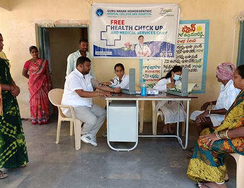
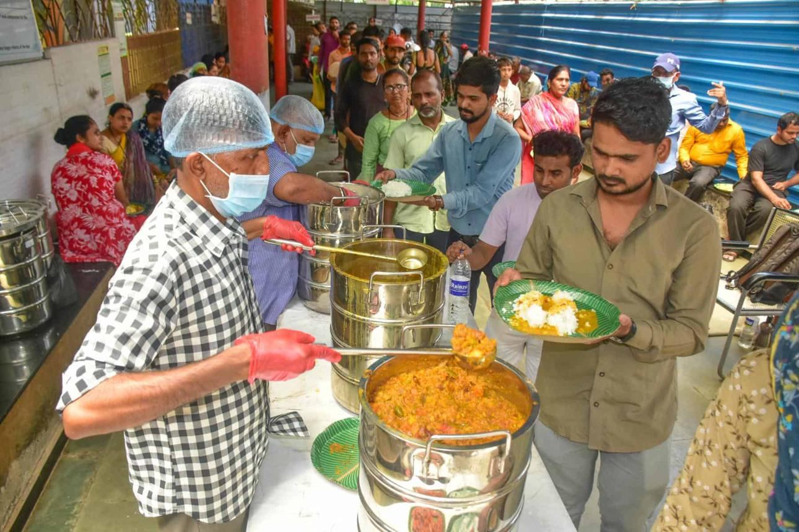

Healthcare
Free surgeries, medical camps, artificial limbs, and rehabilitation services.
Empowering differently-abled individuals with healthcare, education, rehabilitation, and humanitarian services.
Open dashboardExplore projects
Focused programs that support people and strengthen communities.
Free surgeries, medical camps, artificial limbs, and rehabilitation services.
Scholarships and vocational learning that open lasting opportunities.
Food distribution, skill development, and awareness campaigns.
Lives impacted
Free surgeries
Volunteers
Projects completed
Designed for visible, lasting impact.
Providing free prosthetic limbs to differently-abled individuals.
